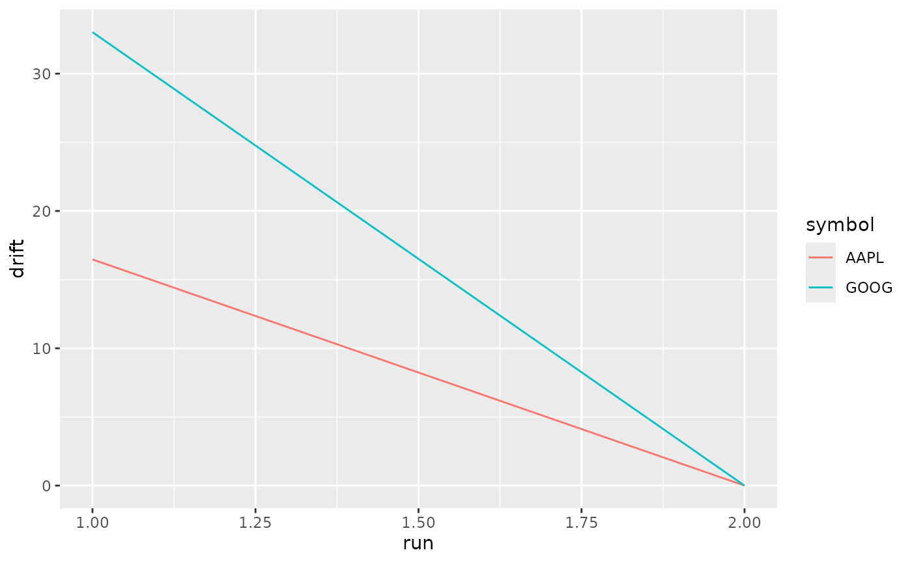

If you want to use rblncr to rebalance a portfolio
periodically, you might want to just keep calling
rebalance_portfolio() until the portfolio is balanced. You
can achieve this with a while loop.
First we set our connection details.
trading_mode = "paper"
alpaca_paper_key <- Sys.getenv("ALPACA_PAPER_KEY")
alpaca_paper_secret <- Sys.getenv("ALPACA_PAPER_SECRET")
alpaca_live_key <- Sys.getenv("ALPACA_LIVE_KEY")
alpaca_live_secret <- Sys.getenv("ALPACA_LIVE_SECRET")
t_conn <- alpaca_connect(trading_mode,
alpaca_paper_key,
alpaca_paper_secret)
d_conn <- alpaca_connect("data",
alpaca_live_key,
alpaca_live_secret)Then we create or load our model. Here we want a portoflio that is 70.% AAPL, and 19.5% GOOG. The remaining 10% will sit in cash.
name <- "sample_portfolio"
description <- "create from function"
cash <- list(percent = 10)
assets <- data.frame(symbol = c("AAPL","GOOG"), percent = c(60,30))
tolerance <- list(percent = 5)
cooldown <- list(days = 365)
model <- create_portfolio_model(name = name,
description = description,
cash = cash,
assets = assets,
tolerance = tolerance,
cooldown = cooldown)
balanced <- FALSE
i <- 1
attempts <- list()
while(!balanced) {
attempt <- balance_portfolio(model,
trading_connection = t_conn,
pricing_connection = d_conn,
min_order_size = 1000,
max_order_size = 10000,
daily_vol_pct_limit = 0.02,
pricing_spread_tolerance = 0.01,
pricing_overrides = NULL,
trader_life = 60,
buy_only = FALSE,
resubmit_interval = 10,
verbose = FALSE)
balanced <- attempt$portfolio_balanced
attempts[[i]] <- attempt
i <- i + 1
}
if(length(attempts) > 0) {
drift_changes <- purrr::map_df(attempts, ~ .x$drift, .id = "run")
drift_changes <- dplyr::mutate(drift_changes, run = as.integer(run))
}These are the trades attempted by the trader(). The
orders with NA timestamps were not even submitted to the
broker because they didn’t have sufficient information. Generally this
happens when the order quantity is zero, or the data connection did not
return sufficient information to create a limit order.
trades <- purrr::map_df(attempts, ~ .x$trades, .id = "run")
trades
#> run timestamp symbol order limit filled status
#> 1 1 2024-03-12 14:45:13 AAPL -57 172.66 -57 filled
#> 2 1 2024-03-12 14:45:13 GOOG 71 139.67 71 filled
#> 3 2 2024-03-12 14:45:31 AAPL -57 172.68 -57 filled
#> 4 2 2024-03-12 14:45:32 GOOG 71 139.10 0 canceled
#> 5 2 <NA> GOOG 71 NA 0 no_limit
#> 6 2 2024-03-12 14:46:00 GOOG 71 139.05 0 canceled
#> 7 2 <NA> GOOG 71 NA 0 no_limit
#> 8 2 2024-03-12 14:46:28 GOOG 71 139.62 71 filledWe can see how the portfolio drift converges to zero over time.
if(length(attempts) > 0) {
ggplot(drift_changes, aes(x = run, y = drift)) +
geom_line(aes(color = symbol))
}
Here are the portfolio weights post-rebalance. You can see that we have managed to achieve our target balances (within tolerance).
get_portfolio_current(t_conn) |>
price_portfolio(d_conn) |>
magrittr::extract2("assets") |>
dplyr::select(symbol, percent_held)
#> symbol percent_held
#> 1 AAPL 59.97
#> 2 GOOG 29.97